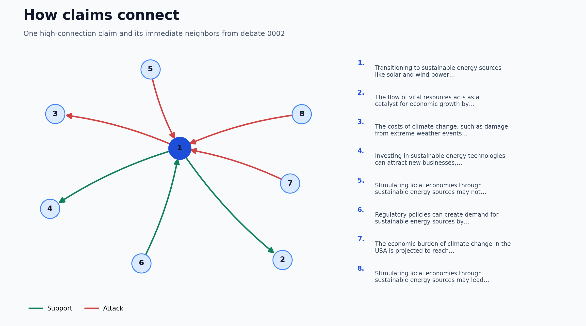

Debate 0002
The combined graph contains 653 claims and 618 support or attack relationships. Pan, zoom, and hover over nodes in the interactive views to inspect the debate.
Explore the combined graph
Choose a view
Combined graphSupport and attack together
Support graphSupporting relationships
Attack graphAttacking relationships
Filtered graphScore filters and layout controls
Support in-degreeLocally supported claims
Cluster themesCommunities of related claims
Support PageRankInfluence through support
Attack PageRankInfluence through attack
Net PageRankSupport influence minus attack influence
Minimum cutsVulnerable connections within clusters